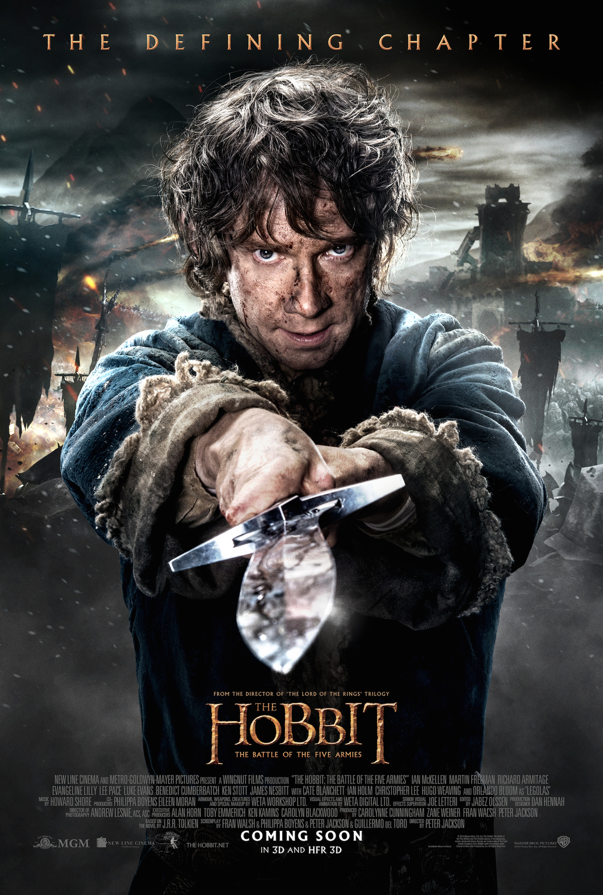

The Hobbit: The Battle of Five Armies

Having reclaimed Erebor and vast treasure from the dragon Smaug, Thorin Oakenshield (Richard
Armitage) sacrifices friendship and honor in seeking the Arkenstone, despite Smaug's fiery wrath
and desperate attempts by the Hobbit Bilbo (Martin Freeman) to make him see reason. Meanwhile,
Sauron sends legions of Orcs in a sneak attack upon the Lonely Mountain. As the fate of Middle
Earth hangs in the balance, the races of Men, Elves and Dwarves must decide whether to unite and
prevail -- or all die.